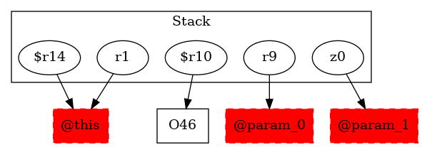

-1 : r1 := @this: Test3
-1 : r9 := @parameter0: testcase.Test3
-1 : z0 := @parameter1: boolean
46 : $r10 = new testcase.Test3$MyException
-1 : $r14 = (testcase.Test3) r1 ->class soot.jimple.internal.JAssignStmt {Left: class soot.jimple.internal.JimpleLocal, Right: class soot.jimple.internal.JCastExpr}
46 : specialinvoke $r10.|testcase.Test3$MyException: void |init|(testcase.Test3)|($r14)
47 : $r11 = new testcase.Test3
47 : specialinvoke $r11.|testcase.Test3: void |init|()|()
50 : if z0 == 0 goto $r10.|testcase.Test3$MyException: testcase.Test3 s| = $r11
51 : throw $r10
53 : $r10.|testcase.Test3$MyException: testcase.Test3 s| = $r11
57 : goto [?= $r13 = new java.lang.Exception]
51 : $r6 := @caughtexception
56 : $r12 = new java.lang.Exception
56 : specialinvoke $r12.|java.lang.Exception: void |init|()|()
56 : return $r12
58 : $r13 = new java.lang.Exception
58 : specialinvoke $r13.|java.lang.Exception: void |init|()|()
58 : return $r13
